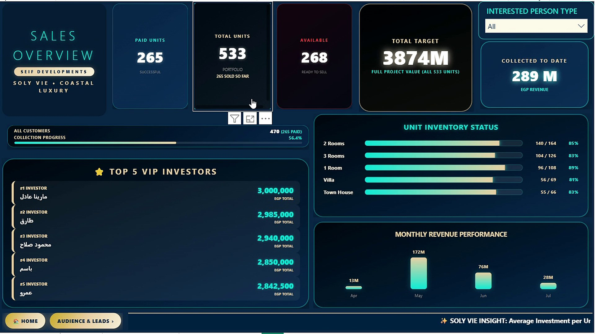
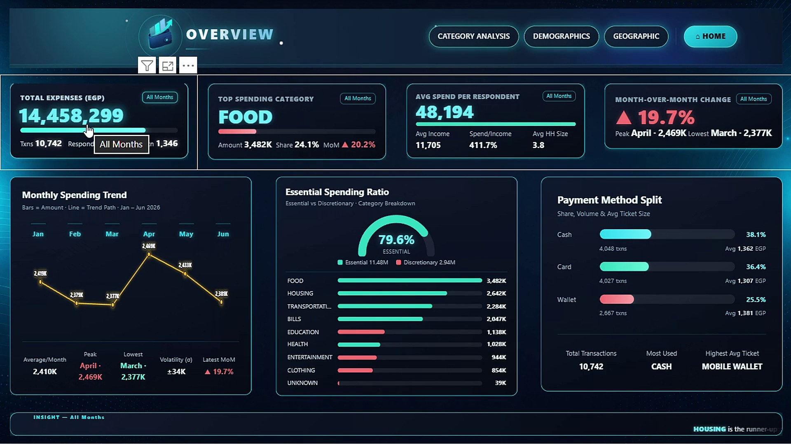

Extract & Clean
Connect sources, profile the data, and remove inconsistencies with Power Query.
Power QueryI'm Mina Hany Wahba, a Data Analyst specializing in Business Intelligence, data visualization, reporting, and decision-ready storytelling.
I turn messy data into structured models, reliable KPIs, interactive dashboards, and practical recommendations using Excel, Power BI, SQL Server, DAX, Power Query, and Python.
Scroll to play
01 / About
I turn raw information into structured analysis, interactive dashboards, reliable reporting, and practical business insights. My goal is to make complex data easier to understand and more useful for decision-making.
With 12 analytics, dashboard, reporting, and database projects across real estate, sales, customer analytics, HR, expenses, operations, supply chain, and sports, I focus on clarity, accuracy, and decision-ready storytelling.
Cleaning, exploring, modeling, and interpreting data to discover meaningful patterns.
Building interactive and decision-ready dashboards with Excel and Power BI.
Turning complex numbers into clear insights that stakeholders can understand.
Academic Background
Faculty of Science, Mansoura University · Expected June 2027
An academic background in mathematics that supports analytical thinking, structured problem-solving, and quantitative reasoning.
02 / What I Build
Channel, product and revenue breakdowns built for fast decisions.
Segment-level churn drivers surfaced from raw telecom data.
Headcount, turnover and retention tracked across departments.
Lead-to-buyer conversion and collection tracked in one view.
Fact/dimension models built to slice profit and orders by region.
Normalized schemas that keep every report accurate at the source.
Not just charts. Clear answers to real business questions.
03 / Capabilities
Transforming raw and inconsistent data into structured, usable datasets.
Exploring patterns, trends, relationships, and performance indicators.
Creating interactive reports that make business performance easier to understand.
Using Power Query, Pivot Tables, formulas, data modeling, and dynamic dashboards.
Turning analytical findings into practical conclusions and clear recommendations.
Creating organized data structures using SQL, ERD, and normalization concepts.
04 / Tools
05 / Under the Hood
A repeatable workflow keeps every dashboard accurate, explainable, and useful.
Connect sources, profile the data, and remove inconsistencies with Power Query.
Power QueryBuild relationships and a reliable star schema using Power Pivot and dimensional thinking.
Power Pivot · Star SchemaUse SQL aggregations and DAX measures to turn business questions into reliable KPIs.
SQL · GROUP BY · DAXUse notebooks and scripts for exploration, validation, and repeatable analysis when needed.
Python · Jupyter · AnacondaDeliver Power BI reports, HTML/CSS visuals, and a clear story that supports action.
Power BI · HTML/CSS/JS05 / Experience
Top achiever in the 140-hour Data Analysis Diploma. Built 10+ dashboards and reports using Excel, Power BI, SQL, and DAX, from data cleaning and modeling through final reporting.
Track inventory and stock levels, verify order accuracy, maintain consistent records, and support customers in a fast-paced environment.
Open to onsite roles in Cairo, hybrid opportunities, and remote work.
Featured Case Studies

01 / REAL ESTATERoute Training · SEIF Developments
Custom DAX, data modeling, and embedded HTML/CSS ticker cards for a real estate sales intelligence view.

03 / PERSONAL FINANCEPersonal Finance Analytics
A branded four-page dashboard with custom visual identity, DAX measures, and dynamic expense tracking.
06 / Selected Work
Analytics projects built to transform data into useful business insights.
07 / Learning
— / Languages
08 / Contact
Have data that needs a clearer story? Let's turn it into dashboards, insights, and better decisions.